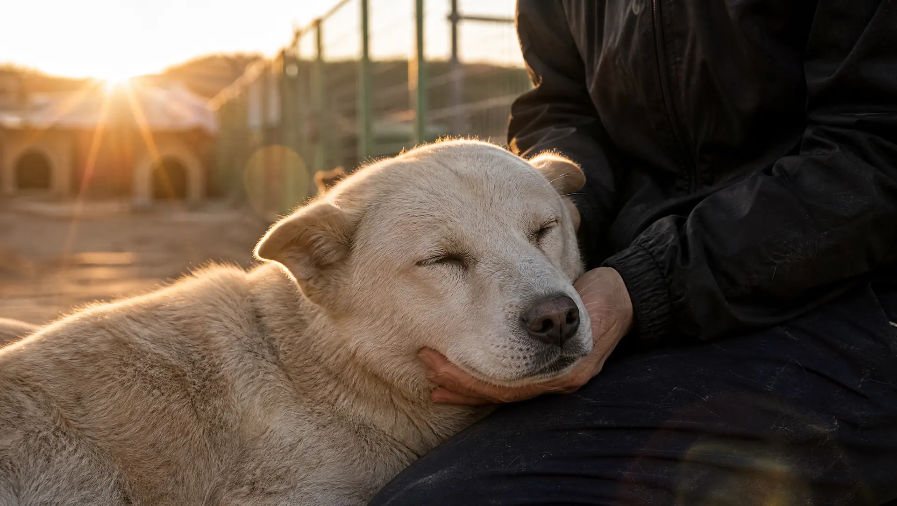

비영리 동물구조단체 · 2017년부터
구조에서 입양까지,
구조에서 입양까지,
집으로 가는 길을
끝까지 함께.
학대와 위기 현장에서 구조한 동물을 치료하고, 가족을 만날 때까지 곁에 있습니다. 오늘 기다리고 있는 친구들을 만나 보세요.

0오늘 가족을 기다리는 친구
0구조한 동물
0가족을 만난 동물
0함께하는 봉사자
0지금 임보 가정을 찾는 친구
입양 & 임시보호
가족을 기다리는 친구들
모집 중·심사 중·입양 완료, 지금 상태를 그대로 보여 드려요.
함께하기
함께하는 방법은 여러 가지예요

최신 구조 소식
소식 전체 →